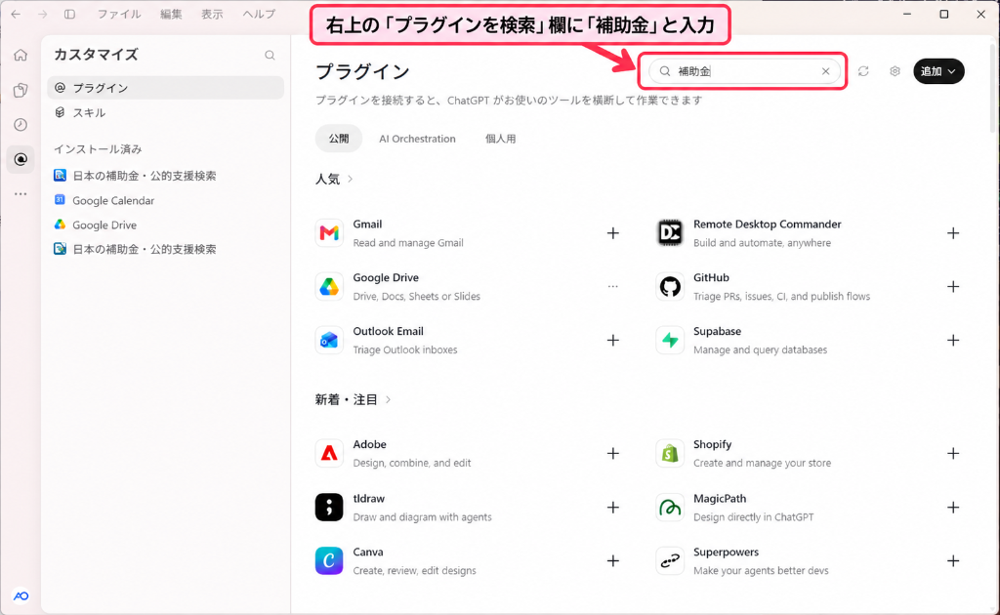
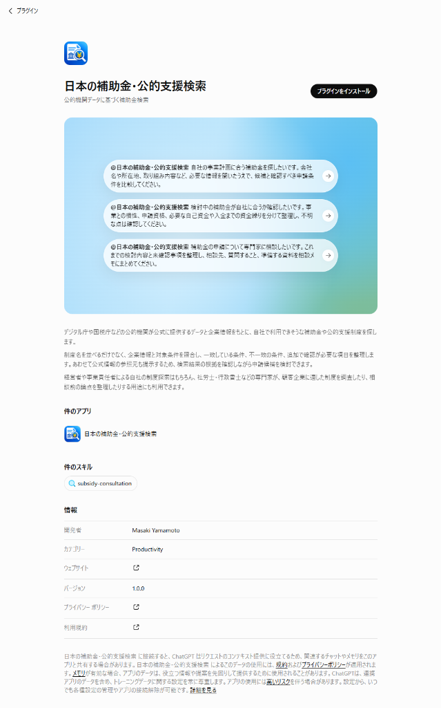

補助金探しを、ChatGPTに相談したことはありませんか。
「日本の補助金・公的支援検索」は、ChatGPTの補助金検索を拡張するプラグインです。
公的機関が提供するデータを取得し、補助金の公募情報と企業の公開情報を照らし合わせて、利用できそうな制度や申請前に確認すべき条件を整理します。
ChatGPTに追加して使うサービスです。ボタンからChatGPTの公開ページが開きます。
※取得できる情報は企業や制度によって異なります。AIの回答には誤りが含まれる場合があるため、申請前には実施機関の最新の公募要領をご確認ください。
「工場の設備を更新したいです。使えそうな補助金を探してください。必要な会社情報は順番に聞いてください。」
補助金探しを、ChatGPTに相談したことはありませんか。
「日本の補助金・公的支援検索」は、ChatGPTの補助金検索を拡張するプラグインです。プラグインとは、いつものChatGPTに新しい機能を追加する仕組みです（OpenAI公式ヘルプ）。
本プラグインは、デジタル庁のJグランツ、経済産業省の法人情報データベース、国税庁の法人番号情報など、公的機関が提供するデータを取得し、相談に活用する機能をChatGPTに加えます。補助金の公募情報と企業の公開情報を照らし合わせ、利用できそうな制度や、申請前に確認すべき条件を整理します。
事実と異なる回答を減らすために、AIの知識や推測だけに頼らず、取得した公的データを回答の根拠として使う設計です。確認できたことと、まだ確認が必要なことを分け、根拠を確かめながら相談を進められます。
制度情報と会社の条件を照らし合わせ、合う点、合わない点、まだ確認が必要な点を分けて整理します。制度を見つけた後の「うちも対象なのか」「次に何を確認すればよいのか」まで、会話を続けながら検討できます。
企業の条件を確認するために、政府機関が提供するデータから、会社の正式名称・所在地のほか、公開されている資本金や従業員数などを取得します。この仕組みは、取引先や調査対象企業の基本情報を確認する用途にもお使いいただけます。
例えば、次のように相談できます：
この会社の資本金や従業員数を、公的な情報から調べてください。確認できない項目は、そのように示してください。
制度の名前が分からなくても大丈夫です。会社のことや、取り組みたいことから話しかけてください。
自社で使えそうな補助金を探してください。会社の所在地や事業内容など、必要な情報を順番に聞いてください。
基本的な会社情報を確認しながら、検討できそうな制度の候補を探します。
工場の設備を更新したいです。使えそうな補助金と、対象になるために確認すべき条件を整理してください。
取り組みたい内容から制度を調べ、対象となる経費や申請前の確認事項を整理します。
検討している補助金が自社に合うか確認したいです。制度名と会社情報を伝えるので、条件に合う点、合わない点、未確認の点を分けてください。
事業との相性と申請条件を分け、判断のために不足している情報も明らかにします。
補助金の申請について専門家に相談したいです。これまでの検討内容と未確認事項を整理し、相談時に質問することをまとめてください。
これまでに分かったことと、専門家に確認したい論点を整理します。
この会社の資本金や従業員数を、公的な情報から調べてください。確認できない項目は、そのように示してください。
公的機関の法人情報データベースから、正式名称・所在地・資本金・従業員数などを照会し、確認できない項目も明示します。
※ChatGPTで本プラグインを選んでから、質問文を貼り付けてください。
ChatGPTのアカウントがあれば、画面の案内に沿って追加し、すぐに相談を始められます。
「ChatGPTで使ってみる」から公開ページへ進むか、ChatGPTのプラグイン画面で「補助金」と検索します。ログインを求められた場合は、ChatGPTにログインしてください。
内容を確認し、「プラグインをインストール」などの案内から追加します。接続やアクセス許可の確認が表示された場合は、内容を確認して進めてください。
ChatGPTで「日本の補助金・公的支援検索」を選び、会社のことや取り組みたいことを伝えます。「チャットで試す」が表示されている場合は、そのボタンから始められます。
自社で使えそうな補助金を探してください。必要な会社情報を順番に聞いてください。
※表示されるボタンや利用手順は、アカウントや利用環境によって異なる場合があります。
ChatGPTアカウントと、本プラグインを利用できる環境が必要です。利用できる機能や上限は、ChatGPTのプランや所属組織の設定などによって異なる場合があります。会社のアカウントで利用できない場合は、管理者の設定をご確認ください。


補助金の制度情報と会社の公開情報を参照し、候補や確認事項を整理します。根拠となる公式情報も確認しながら、申請候補を検討できます。
公開されている制度の内容や募集期間などを調べ、候補となる補助金の情報を確認します。
会社の所在地、業種など、公開されている企業情報を確認します。
同じ名前の会社を取り違えないよう、正式名称や所在地などの確認に利用します。
※取得できる情報の範囲には限りがあります。すべての補助金・公的支援制度を網羅するものではありません。申請前には、必ず実施機関の最新の公募要領をご確認ください。
※本サービスは公的情報を活用する民間サービスです。政府機関から個別に認定・推奨されたものではありません。
利用開始にあたって、ご質問の多い項目をまとめました。
通常のChatGPTでも、Web検索を使って補助金を調べることはできます。本プラグインは、それに加えて、公的機関が提供する制度情報や企業情報を取得する仕組みと、制度の条件を確認する進め方を用意しています。
制度の候補を探すだけでなく、企業情報と照らし合わせ、条件に合う点・合わない点・追加確認が必要な点を整理するための拡張機能です。
本製品は、公的な制度情報と企業情報をAIにつなぎ、会話の中で調べられるようにした取り組みです。
AI Orchestrationでは、MCP・API連携を含む仕組みの設計から、利用体験の設計、公開に向けた開発まで支援しています。
頻繁に改定される制度情報をどのようにAIへ安全かつ正確に渡すか。公的APIのデータ構造の差異を吸収し、AIが理解可能なMCPツールへと正規化するアーキテクチャ設計の詳細を、プロダクトストーリーページで解説しています。
「日本の補助金・公的支援検索」は、ChatGPTでの利用だけでなく、他社サービスとの連携や共同展開も想定して開発しています。
自社プロダクトへの組み込み、既存サービスとの連携、共同提供などをご検討の事業者様は、お気軽にお問い合わせください。